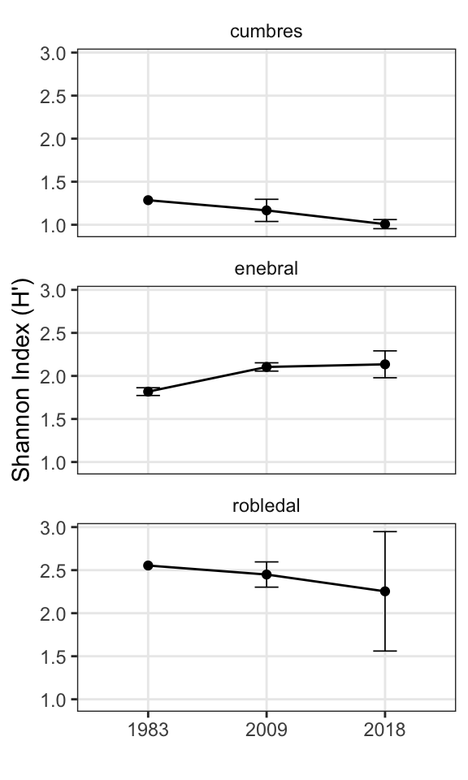
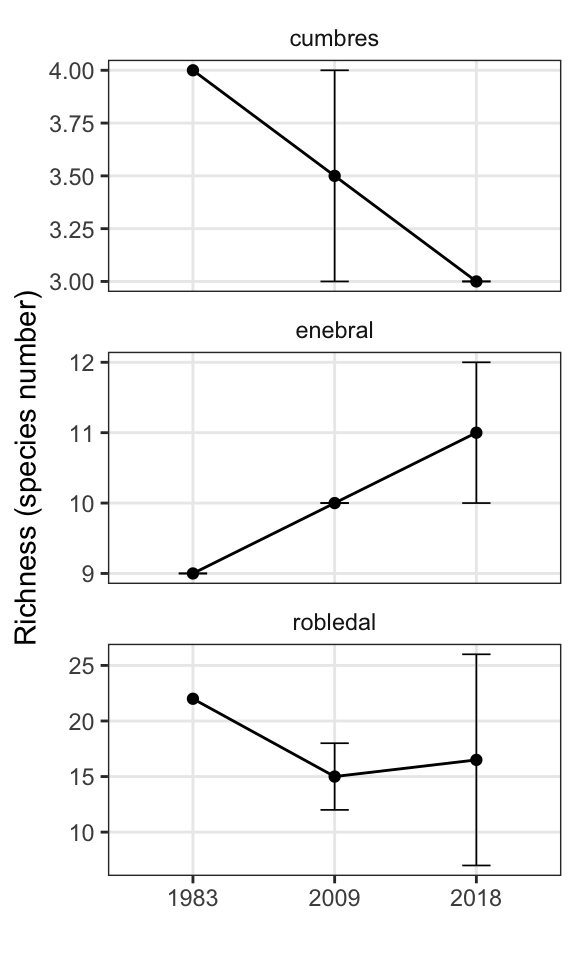
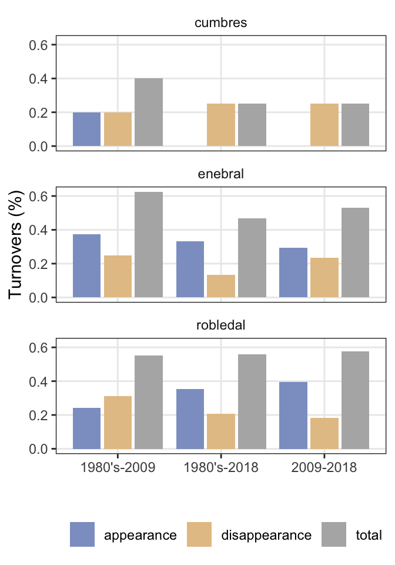
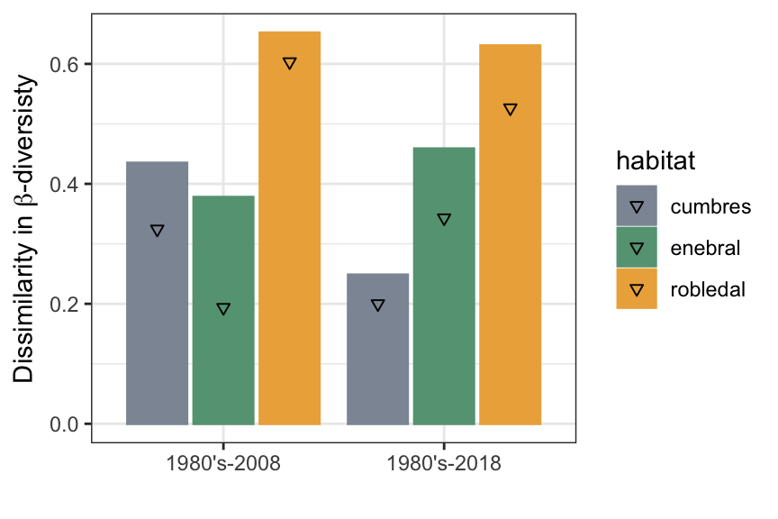
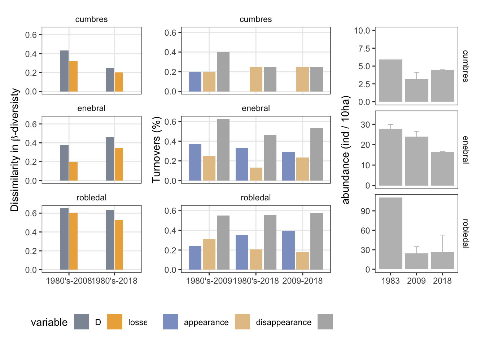

report
Antonio J Perez-Luque
2021-05-10
Last updated: 2021-05-21
Checks: 7 0
Knit directory: booksn_dispersantes/
This reproducible R Markdown analysis was created with workflowr (version 1.6.2). The Checks tab describes the reproducibility checks that were applied when the results were created. The Past versions tab lists the development history.
Great! Since the R Markdown file has been committed to the Git repository, you know the exact version of the code that produced these results.
Great job! The global environment was empty. Objects defined in the global environment can affect the analysis in your R Markdown file in unknown ways. For reproduciblity it’s best to always run the code in an empty environment.
The command set.seed(20210428) was run prior to running the code in the R Markdown file. Setting a seed ensures that any results that rely on randomness, e.g. subsampling or permutations, are reproducible.
Great job! Recording the operating system, R version, and package versions is critical for reproducibility.
Nice! There were no cached chunks for this analysis, so you can be confident that you successfully produced the results during this run.
Great job! Using relative paths to the files within your workflowr project makes it easier to run your code on other machines.
Great! You are using Git for version control. Tracking code development and connecting the code version to the results is critical for reproducibility.
The results in this page were generated with repository version 599c816. See the Past versions tab to see a history of the changes made to the R Markdown and HTML files.
Note that you need to be careful to ensure that all relevant files for the analysis have been committed to Git prior to generating the results (you can use wflow_publish or wflow_git_commit). workflowr only checks the R Markdown file, but you know if there are other scripts or data files that it depends on. Below is the status of the Git repository when the results were generated:
Ignored files:
Ignored: .Rhistory
Ignored: .Rproj.user/
Ignored: data/.DS_Store
Unstaged changes:
Modified: analysis/abundance.Rmd
Modified: data/passerine_ab.csv
Note that any generated files, e.g. HTML, png, CSS, etc., are not included in this status report because it is ok for generated content to have uncommitted changes.
These are the previous versions of the repository in which changes were made to the R Markdown (analysis/report.Rmd) and HTML (docs/report.html) files. If you’ve configured a remote Git repository (see ?wflow_git_remote), click on the hyperlinks in the table below to view the files as they were in that past version.
| File | Version | Author | Date | Message |
|---|---|---|---|---|
| Rmd | 599c816 | Antonio J Perez-Luque | 2021-05-21 | change plots for publication |
| html | 7857fe5 | Antonio J Perez-Luque | 2021-05-10 | Build site. |
| Rmd | f7470af | Antonio J Perez-Luque | 2021-05-10 | create_report |
Diversidad
Diversidad alfa
Se ha analizado la evolución temporal de la diversidad alfa para los tres sitios (cumbres, enebral y robledal). Las altas cumbres muestran un descenso en cuanto al índice de Shannon desde los años 1980 hasta la actualiadad, mientras que para los otros dos hábitats se muestran valores estables de diversidad.
Una comparación de tres momentos temporales, esto es, 1980’s, 2009 (media 2008-2009) y 2018 (media 2017-2018) muestra un patrón similar, aunque parece una ligera tendencia a aumetar la diversidad en el enebral y un descenso en el robledal.

| Version | Author | Date |
|---|---|---|
| 7857fe5 | Antonio J Perez-Luque | 2021-05-10 |
Shannon index
Riqueza
Respecto a la riqueza, el análisis temporal (año a año) no revela tendencias claras. La comparativa entre los tres momentos temporales revela un descenso en la riqueza para las altas cumbres, y patrón mas estable en robledal y en enebral, aunque para robledal se observó un descenso en la riqueza entre 1980’s y 2009.

| Version | Author | Date |
|---|---|---|
| 7857fe5 | Antonio J Perez-Luque | 2021-05-10 |
Richness value
Turnover
El análisis del turnover para cada uno de los hábitats a lo largo del tiempo muestra valores muy dispares, observandose la mayor variación en el turnover para el hábitat cumbres. La comparación entre los tres momentos temporales revela:
Cumbres:
- Los valores de turnover son mayores entre 1980-2009 (57 %), contribuyendo en mayor medida las pérdidas de especies.
- Entre 1980’s y 2018 la tasa turonver se sitúa en el 50 % siendo todo debido la pérdida de especies.
Enebral:
- Altos valores de turonver entre 1980-2008 (66 %), con igual contribución de pérdidas y entradas de especies.
- Valores del 52 % entre 1980’s y 2019, con contribuciones similares de las pérdidas y las entradas
Robledal:
- Altos valores de turonver entre 1980-2008 (55.1 %) y entre 1980-2018. Las pérdidas de especies contribuyeron mas a la turnover entre 1980-2008, y por el contrario se produjo una mayor contribución a la turnover entre 1980-2018 de la entrada de especies.

| Version | Author | Date |
|---|---|---|
| 7857fe5 | Antonio J Perez-Luque | 2021-05-10 |
Diversidad Beta
Se ha calculado el TBI (temporal beta diversity index, sensu Legrende 2019), para cada hábitat en el momento inicial (1980’s y los otros momentos). Los resultados (escalados de 0 a 1), muestran que la mayor disimilaridad en la Beta-diversidad (BD) se observa para los robledales tanto entre 1980 y 2008, como tentre 1980’s-2018.
En los tres hábitats, la mayor contribución de las diferencias en la BD entre momentos temporales se debe a la pérdida de especies (indicada como triángulos en las barras).

| Version | Author | Date |
|---|---|---|
| 7857fe5 | Antonio J Perez-Luque | 2021-05-10 |
Por otro lado, si evaluadmos la BD para cada hábitat entre cada uno de los años (sensu Baselga 2017), observamos un valor medio de dissimilarida de:
- robledal: 0.798
- enebral= 0.778
- cumbres = 0.740
Esta aproximación, sin conocerla muy a fondo, le veo la limitación para nuestro caso de que al existir mas años muestreados en la actualidad, puede que estemos sesgando los datos pasados.
Abundancia
Se ha explorado la evolución temporal de la abundancia total (n ind / 10 ha) para cada uno de los hábitats y se ha observado:
- Descenso progesivo en la abundancia en el enebral
- Descenso abrupto de la abundancia en el robledal entre 1980’s y 2009, aunque seguidamente el patrón se vuelve mas estable.
- Un patrón estable, e incluso de ligero aumento para la abundancias totales del enebral.
| Version | Author | Date |
|---|---|---|
| 7857fe5 | Antonio J Perez-Luque | 2021-05-10 |
Si exploramos la abundacia en los tres momentos temporales obtenemos un patrón similar:
| Version | Author | Date |
|---|---|---|
| 7857fe5 | Antonio J Perez-Luque | 2021-05-10 |
Abundance total (nind / 10ha)
Tendencias temporales
Hemos analizado la tendencia temporal (\(tau\)) para cada una de las especies en cada uno de los hábitats mediante análisis no paramétricos de Mann-Kendall. Los resultados muestran:
Cumbres: no se observan tendencias significativas para las 4 especies analizadas en este hábitat. Los valores de las tendencias son muy bajos, siendo Carduelis cannabina la especie que presenta una tendencia más acusada (\(tau =-0.333\))
Enebral: destaca el hecho de que de las 9 especies analizadas, 7 presentan tendencias negativas, destacando Prunella collaris (\(tau =-0.598\)) y Oenanthe oenanthe (\(tau =-0.901\)), siendo esta última tendencia significativa en el periodo estudiado.
Robledal: se observan tendencias en los dos sentidos entre las 20 especies analizadas. Destaca el significativo descenso de Garrulus glandarius (\(tau =-0.535\)), así como el aumento de Phoenicurus ochruros (\(tau =0.738\)).
mk.all %>%
mutate(sig = ifelse(pvalue < 0.05, "*", "")) %>%
ggplot(aes(x=especie, y=tau)) +
geom_bar(stat="identity", fill="gray") +
facet_wrap(~habitat) + coord_flip() +
theme_bw() +
geom_hline(yintercept = 0) +
geom_text(aes(label=sig), hjust=1.5, size=4) +
theme(
panel.grid.minor = element_blank(),
strip.background = element_blank()
) +
xlab("Species") + ylab("Mann-Kendall trend (tau)")
| Version | Author | Date |
|---|---|---|
| 7857fe5 | Antonio J Perez-Luque | 2021-05-10 |
Explorar evolución temporal de algunas especies
se han seleccinado algunas especies para mostrar su evolución temporal, si queréis otras podemos elegirlas (aquí se muestran todas las que tenemos)
Enebral
se muestran algunas especies con tendencias regresivas, y otras con tentencias mas o menos estables.
- Gráfico de abundance index (es decir, considerando 1 el valor de abundancia inicial) (esta aproximación es similar a la que utiliza TRIM para visualizar los datos)
| Version | Author | Date |
|---|---|---|
| 7857fe5 | Antonio J Perez-Luque | 2021-05-10 |
En este otro gráfico combinamos datos de abundancia reales (puntos negros) con datos de abundance index (tal y como os he comentado mas arriba).
plotabundances(df = passerine.abindex,
myhabitat = "enebral",
selected_especies = sp_enebral)
| Version | Author | Date |
|---|---|---|
| 7857fe5 | Antonio J Perez-Luque | 2021-05-10 |
Gráfico resumen

| Version | Author | Date |
|---|---|---|
| 7857fe5 | Antonio J Perez-Luque | 2021-05-10 |
null device
1 Migración altitudinal
Siguiendo la idea del trabajo de Ardeola, he replicado los el análisis para Phoenicurus ochruros y Carduelis cannabina usando los siguientes intervalos de datos:
- 1983 (mean 1981-1985)
- 2010 (mean 2008:2014)
- 2018 (mean 2015:2018)
| Version | Author | Date |
|---|---|---|
| 7857fe5 | Antonio J Perez-Luque | 2021-05-10 |
sessionInfo()R version 4.0.2 (2020-06-22)
Platform: x86_64-apple-darwin17.0 (64-bit)
Running under: macOS Catalina 10.15.3
Matrix products: default
BLAS: /Library/Frameworks/R.framework/Versions/4.0/Resources/lib/libRblas.dylib
LAPACK: /Library/Frameworks/R.framework/Versions/4.0/Resources/lib/libRlapack.dylib
locale:
[1] en_US.UTF-8/en_US.UTF-8/en_US.UTF-8/C/en_US.UTF-8/en_US.UTF-8
attached base packages:
[1] stats graphics grDevices utils datasets methods base
other attached packages:
[1] facetscales_0.1.0.9000 patchwork_1.1.1 DT_0.17
[4] here_1.0.1 forcats_0.5.1 stringr_1.4.0
[7] dplyr_1.0.4 purrr_0.3.4 readr_1.4.0
[10] tidyr_1.1.2 tibble_3.0.6 ggplot2_3.3.3
[13] tidyverse_1.3.0 workflowr_1.6.2
loaded via a namespace (and not attached):
[1] Rcpp_1.0.6 lubridate_1.7.10 assertthat_0.2.1 rprojroot_2.0.2
[5] digest_0.6.27 R6_2.5.0 cellranger_1.1.0 backports_1.2.1
[9] reprex_1.0.0 evaluate_0.14 highr_0.8 httr_1.4.2
[13] pillar_1.4.7 rlang_0.4.10 readxl_1.3.1 rstudioapi_0.13
[17] whisker_0.4 jquerylib_0.1.3 rmarkdown_2.6.6 labeling_0.4.2
[21] htmlwidgets_1.5.3 munsell_0.5.0 broom_0.7.4 compiler_4.0.2
[25] httpuv_1.5.5 modelr_0.1.8 xfun_0.20 pkgconfig_2.0.3
[29] htmltools_0.5.1.1 tidyselect_1.1.0 crayon_1.4.1 dbplyr_2.1.0
[33] withr_2.4.1 later_1.1.0.1 grid_4.0.2 jsonlite_1.7.2
[37] gtable_0.3.0 lifecycle_1.0.0 DBI_1.1.1 git2r_0.28.0
[41] magrittr_2.0.1 scales_1.1.1 cli_2.3.0 stringi_1.5.3
[45] farver_2.0.3 fs_1.5.0 promises_1.2.0.1 xml2_1.3.2
[49] bslib_0.2.4 ellipsis_0.3.1 generics_0.1.0 vctrs_0.3.6
[53] tools_4.0.2 glue_1.4.2 crosstalk_1.1.1 hms_1.0.0
[57] yaml_2.2.1 colorspace_2.0-0 rvest_0.3.6 knitr_1.31
[61] haven_2.3.1 sass_0.3.1